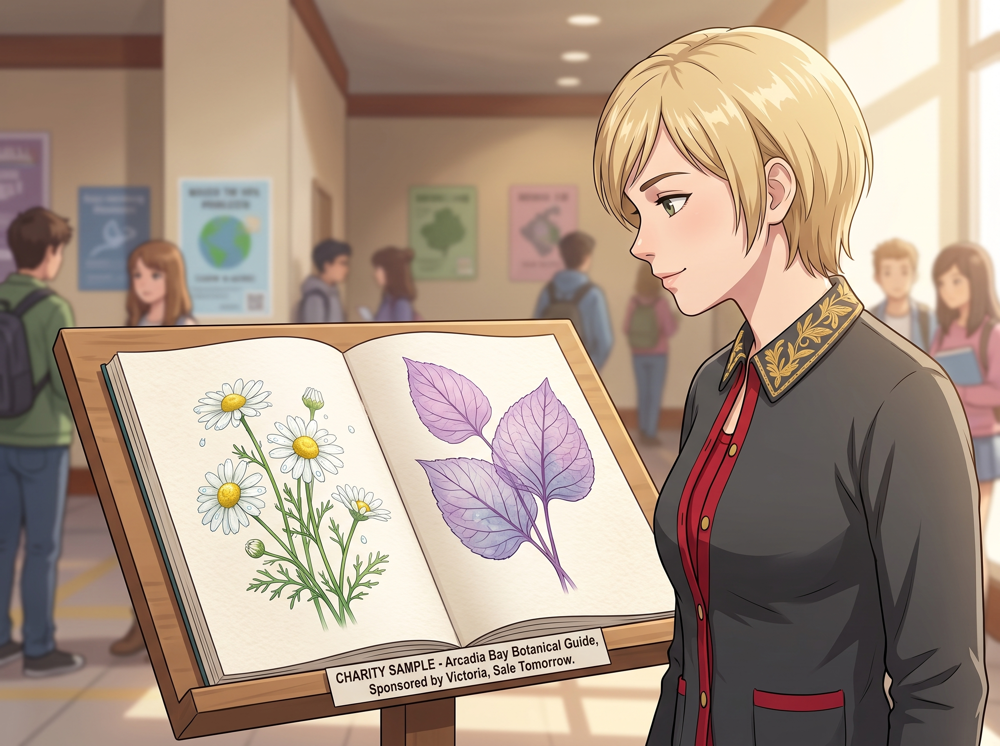

圖鑑惡搞事件

一、義賣圖鑑的心血
Kate 耗費數週心血,由 Victoria 贊助頂級紙張印製的《阿卡迪亞灣微距植物圖鑑》義賣冊,終於印刷完成,剛在校園中庭擺出樣品,準備隔天正式義賣。
前面幾頁,全是極致唯美聖潔的畫面——晨露折射下的洋甘菊、半透明的紫羅蘭花脈,每一張都精緻得像藝術品。
二、驚悚的翻頁
翻到第七頁時,畫風忽然驟變。
一張用微距鏡頭拍得纖毫畢現的照片赫然出現——手掌上厚實的老繭、虎口被扳手磨破後結痂的傷疤,以及食指關節上那個褪色的骷髏紋身特寫。
下面的圖註,被人偷偷改成了:
「黑斑雜草(學名:Priceus Punkus),生長於機油與廢鐵堆,極具侵略性,請勿隨意澆水。」
三、三方狂怒
Kate 捧著圖鑑,眼眶瞬間泛紅,嘴唇微微發抖。
「Chloe……」她的聲音帶著哭腔,「這是要給流浪動物收容所募捐的嚴肅圖鑑啊!」
Victoria 湊過來看清那頁內容,臉色瞬間陰沉下來——她花了幾千美元用高克重純棉紙印製的畫冊,精確到毫米的版面網格,居然被硬生生塞進一張黑機油手的特寫照。
「Price!」她怒吼一聲,直接把手裡的名牌手袋甩給助理,轉身抄起旁邊一根用來支撐番茄藤的園藝竹竿,「妳毀了我的版面!老娘今天要把妳的手指拆下來當花肥!」
連一向護著 Chloe 的 Max,這次也毫不猶豫地站到了對立面。她迅速把相機掛回胸前,捲起手裡的硬紙筒,語氣裡帶著罕見的嚴肅。
「Chloe,」她說,「這次妳真的太過分了。連我都救不了妳。」
四、天台大逃亡
Chloe 嘴裡叼著一根未點燃的煙,見狀撒腿就跑,繞著天台的溫室花架瘋狂逃竄,一邊跑一邊試圖狡辯。
「冷靜點!姑娘們!」她怪叫著,聲音裡帶著毫不心虛的振振有詞,「這叫人與自然的後現代對比!粗糙的人類痕跡,與脆弱的植物共生!這很有批判性好不好?!」
「批判妳個頭!」Victoria 舉著竹竿窮追不捨,高跟鞋踩在木棧道上發出急促的咯咯聲響。
Kate 也顧不上平時的溫柔矜持,抄起澆花用的小噴壺,加入了這場追逐,壺嘴瞄準的每一下,都精準地噴向 Chloe 的後腦勺。
Max 則舉著捲起的硬紙筒,從另一個方向包抄過去,堵住了 Chloe 想要逃竄的退路。
五、四面楚歌
Chloe 最終被逼進溫室花架旁的死角,前有 Max 的紙筒,後有 Victoria 的竹竿,頭頂還不斷被 Kate 的冷水噴壺無情澆灌。
「唔啊!」她抱著腦袋,一邊求饒一邊還嘴硬地嘟囔,「輕點輕點!老娘錯了行了吧!下次改用鉛筆偷偷寫,絕對不會被發現!」
「這是重點嗎!」Kate、Victoria 和 Max 三人異口同聲地怒吼。
Chloe 蹲在花架下,渾身濕透,腦袋上被 Max 的紙筒敲出幾個包,連連討饒,終於徹底放棄了那套「後現代批判藝術」的說辭,乖乖舉起雙手投降。
「行了行了,」她喘著氣,語氣裡帶著徹底的認栽,「明天重印,錢我出。」
Victoria 這才收起竹竿,居高臨下地哼了一聲:「這還差不多。」